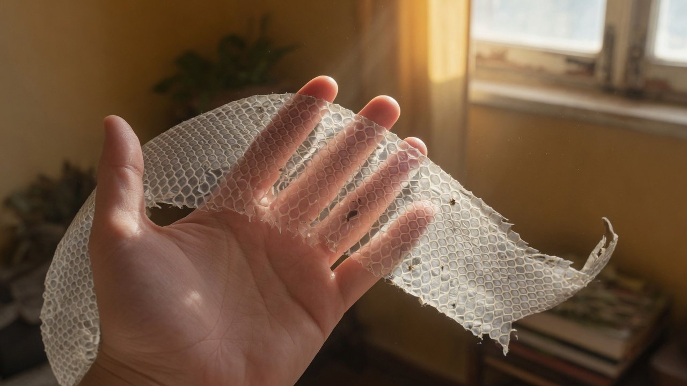
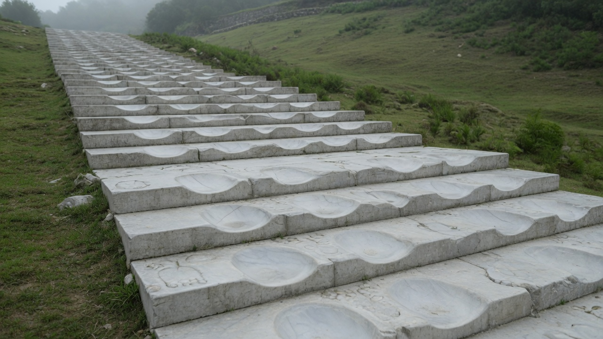
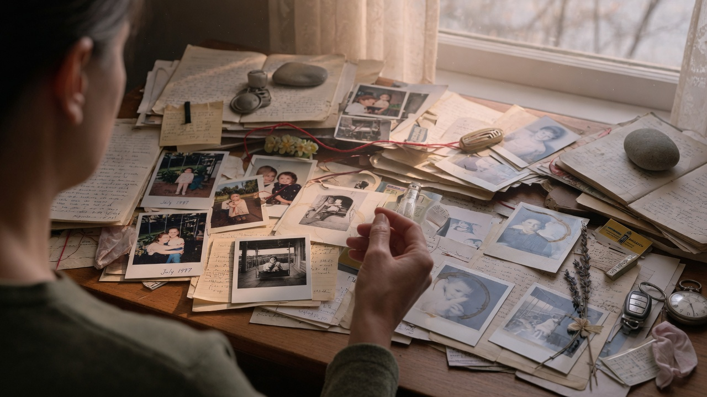
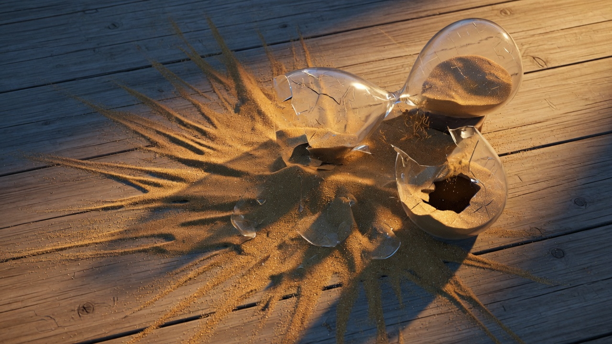
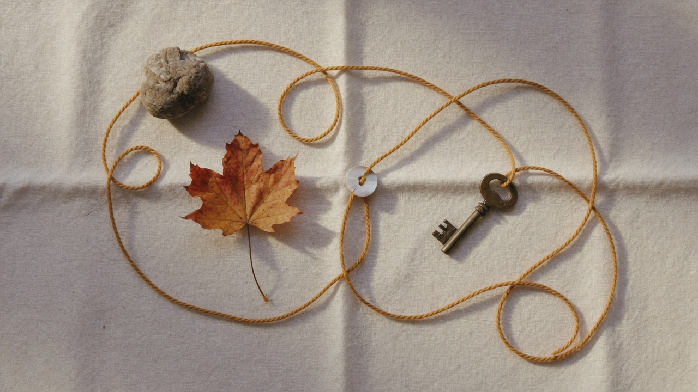

#01 The Frozen Frame
#02 Strategic Pruning
#03 The Weathered Inscription
#04 Threshold Paralysis
#05 The Witness Position
#06 Three Kinds of Forgetting

#07 The Old Skin

#08 The Erosion Pattern
#09 Agency at the Edge

#10 The Catalog Loop
#11 Seasons in One Frame
#12 The Mirror Split
#13 The Substrate BeneathHERO

#14 Pathological Cascade
#15 Who Am I Now?
#16 The Choosing Hand
#17 The Quiet Before Release
#18 Clinging to the Frame

#19 The Continuity Thread
#20 The River That Holds